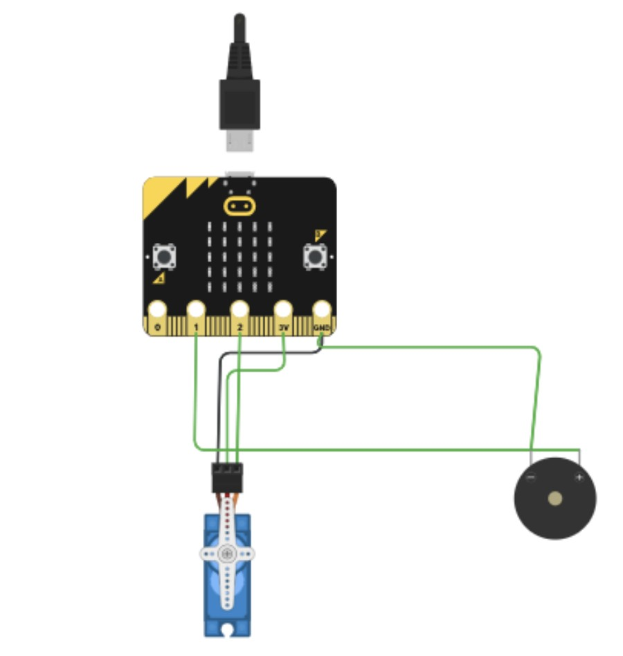

Automatic Door Locking System
Designed and Developed by Ming
Tired of carrying your keys everywhere you go, and worried if your door is locked or not? Do you always have that bugging feeling for you might've forgotten to lock your door? introducing: My automated door locking system. This system makes locking doors hassle-free, and focuses on making your home safer. All this system requires is a micro:bit and servo motor to automatically lock and unlock the door depending on the light level.
See it in action!
How it works:
The system I'm using uses a light sensors on the microbit to determine if it's daytime, or if a strong lightforce is detected.
- Daytime: The door automatically unlocks.
- Nighttime: The door automatically locks.
- Flashlight Override: Shine a flashlight on the sensor to unlock the door at night.
Tinkercad View
Who Can Use This?
This system is designed for everyone in the household. It’s especially useful for individuals who frequently go in and out of the house, ensuring convenience and peace of mind.
Key Features
- Automatically locks and unlocks the door based on light levels.
- Easy to use for all household members.
- Improves safety by ensuring doors are locked at night.
- Hassle-free operation, eliminating the need for physical keys.
360 View
Why Choose This System?
This automated door lock system provides a seamless solution to enhance home safety and convenience. By removing the need to remember to lock your door, it ensures a safer living environment while being incredibly user-friendly.